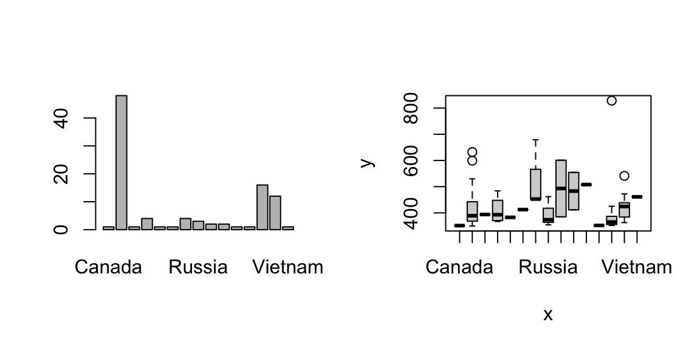

Lecture 2: Data types
Data: Tallest building
Exercise: tallest buildings
- Go to https://en.wikipedia.org/wiki/List_of_tallest_buildings
- We will only look at the top 10 tallest buildings
- Create a vector that stores the Height (m) of the top 10 tallest buildings
- Use R to verify that the vector you created has a length of 10
- Calculate the average Height in meters
- Convert height from meters to ft and store it in a new vector
- Print the values of the new vector and check that these values are the same as Height (ft) given in Wikipedia
- Create corresponding vectors for the number of floors and year built for the top 10 tallest buildings
- Create a vector of
{0, 1}values, where 0 means the building was built in 2015 or before, and 1 means otherwise - Generate a scatterplot of Floors by Height (m), set the color to “col=year_ind+2,” where “year_ind” is the indicator vector created in the last step
Show solution
Prep work
Import a dataset
Download the dataset “tallest building_2026.csv”
You need to specify the location (file path) of your dataset when you export or import a dataset. For simplicity:
In general:
- Use “/” and Tab to navigate through folders
- Use “../” to go up to the parent folder
- If you want to check your current folder, use
getwd()(“get working directory”) - To export a CSV file, use
write.table()
In addition, load necessary packages
Types of data
- Basic types: numeric, double, logical, character, integer
- Use
typeof()orclass()to check
[1] "numeric"[1] "double"[1] "character"[1] "logical"- Use functions of the form
as.XXX()to switch between different types
Data modification
Putting things together…
Take a look at the Floors variable. This format is difficult to work with. To parse a text using R, you need to be very specific about the text pattern. This is done using “regular expression” (a pattern language used to search, match, and manipulate text).
df.building$Floors
df.building <- df.building %>%
mutate(
Floors_num = str_extract(Floors, "^\\d+") %>%
as.integer(),
Floors_additional = str_extract(Floors, "(?<=\\(\\+ )\\d+") %>%
as.integer(),
Floors_additional_text = str_extract(Floors, "(?<=\\d )[^(]+(?=\\))") %>%
str_trim()
)
# double check
str(df.building)Factors
Factors
Locationis entered as character (i.e., text) data
[1] "character" [1] "United Arab Emirates" "Malaysia" "China"
[4] "Saudi Arabia" "South Korea" "United States"
[7] "Taiwan" "Hong Kong" "Russia"
[10] "Vietnam" "Kuwait" "Egypt"
[13] "Indonesia" "Turkey" "Canada" - We might want to treat it as a factor instead
- Key difference: factors can be treated as numbers but characters cannot
[1] 13 7 2 9 2 10 14 2 2 2 11 2 4 2 14 8 15 2 7 2 7 7 2 2 2
[26] 14 2 2 14 2 14 14 13 14 14 2 2 2 13 6 4 10 2 2 2 3 2 2 13 2
[51] 2 2 14 9 2 2 5 2 13 14 13 13 2 2 2 4 8 2 2 2 13 2 2 4 14
[76] 14 13 2 2 2 2 13 13 2 2 13 13 13 13 2 2 8 12 13 1 2 2 2 [1] NA NA NA NA NA NA NA NA NA NA NA NA NA NA NA NA NA NA NA NA NA NA NA NA NA
[26] NA NA NA NA NA NA NA NA NA NA NA NA NA NA NA NA NA NA NA NA NA NA NA NA NA
[51] NA NA NA NA NA NA NA NA NA NA NA NA NA NA NA NA NA NA NA NA NA NA NA NA NA
[76] NA NA NA NA NA NA NA NA NA NA NA NA NA NA NA NA NA NA NA NA NA NA NAUseful functions for factors
[1] United Arab Emirates Malaysia China
[4] Saudi Arabia South Korea United States
[7] Taiwan Hong Kong Russia
[10] Vietnam Kuwait Egypt
[13] Indonesia Turkey Canada
15 Levels: Canada China Egypt Hong Kong Indonesia Kuwait Malaysia ... Vietnam [1] "Canada" "China" "Egypt"
[4] "Hong Kong" "Indonesia" "Kuwait"
[7] "Malaysia" "Russia" "Saudi Arabia"
[10] "South Korea" "Taiwan" "Turkey"
[13] "United Arab Emirates" "United States" "Vietnam" - Factors are often used as a grouping variable.
tapply()allows you to analyze data by groups.
Canada China Egypt
2026.0 2019.0 2023.0
Hong Kong Indonesia Kuwait
1997.5 2022.0 2011.0
Malaysia Russia Saudi Arabia
2008.5 2016.0 2016.5
South Korea Taiwan Turkey
2018.0 2004.0 2024.0
United Arab Emirates United States Vietnam
2012.5 2017.0 2018.0 Canada China Egypt
351.4000 412.6417 393.8000
Hong Kong Indonesia Kuwait
409.3250 382.9000 412.6000
Malaysia Russia Saudi Arabia
509.0750 396.6333 493.0000
South Korea Taiwan Turkey
483.0500 508.0000 352.0000
United Arab Emirates United States Vietnam
400.9500 423.9000 461.2000 # A tibble: 15 × 4
Location_F `median(Year)` `mean(Height_m)` `length(Year)`
<fct> <dbl> <dbl> <int>
1 Canada 2026 351. 1
2 China 2019 413. 48
3 Egypt 2023 394. 1
4 Hong Kong 1998. 409. 4
5 Indonesia 2022 383. 1
6 Kuwait 2011 413. 1
7 Malaysia 2008. 509. 4
8 Russia 2016 397. 3
9 Saudi Arabia 2016. 493 2
10 South Korea 2018 483. 2
11 Taiwan 2004 508 1
12 Turkey 2024 352 1
13 United Arab Emirates 2012. 401. 16
14 United States 2017 424. 12
15 Vietnam 2018 461. 1- Plotting with
Locationas a character vector is not easy
- Plotting with
Location_F:

From vector to data: data frames
Data frame
In most cases, datasets in R are stored as a data frame
- Subsetting requires two indices (row, column)
- Easier: each component in a data frame corresponds to a column (i.e., a variable); use
$to get the component
Useful functions
Exercise: data frame basics
Print out the names of the first 5 buildings
Calculate the average height in meters of the first 5 buildings (should get 667.8)
Create a new vector,
ft.per.floor, by height (ft) / number of floors
To add a variable to an existing data frame
- Calculate the average
ft.per.floorof buildings by Location
Canada China Egypt
10.87736 16.39246 16.77922
Hong Kong Indonesia Kuwait
15.63356 16.74667 16.92500
Malaysia Russia Saudi Arabia
17.06015 14.50640 16.98750
South Korea Taiwan Turkey
14.07748 16.50495 19.57627
United Arab Emirates United States Vietnam
15.15999 16.90919 18.67901 - Create a scatterplot of year by height (ft), colored by Location (hint: use the factor version)

Matrix
Matrix
- $ doesn’t work for getting variables from a matrix
- Subsetting can be done using square brackets: matrix[row, column]
- Variable names are now column names
- All entries in
df.building.matrixare converted to characters - This is because entries in a matrix must have the same type
- Matrices are more useful for storing only numeric values
- In comparison: recall that a data frame allows variables to have different types
A more general R object: list
List
- Suppose we also want to store these information
- We have the following R objects
df.building: a 61 x 9 data framesample.size: a numeric valuevariables: a character vector of size 9
- Q: What if we want to store all three objects in one R object?
List
- A: Create a list with three components
- Note: if a name is not provided for a component, it will be indexed by number
- List is very general: each component can be of different length or type
- Use
$to extract any component - Try
list.building$...to print out each component to double-check - Another way to extract component: square bracket
list.building["COMPONENT"]is identical tolist.building$COMPONENT
- Benefit of using
$: no need to spell; use Tab - Benefit of using
[","]: can return more than one component in a more automated fashion
Useful functions for lists
Handling a list is very similar to handling a data frame
You can combine lists with c(); for instance: c(list.building, newlist)
R functions
R functions
- R functions follow the same pattern:
function_name(argument1 = XXX, argument2 = XXX, ...)
- Use
?function_nameto bring up the help menu
pipe operator (dplyr package)
The pipe operator, %>%, is a different syntax for calling R functions: FUNCTION(x) is the same as x %>% FUNCTION
For functions with multiple arguments: by default, R recognizes the argument being piped as the first argument; or you can use “.” to specify
Exercise: scatterplot
- Generate a scatterplot. Can you think of a way to color it based on year, and reproduce this plot?

Sample code 1
- Create an empty vector with the same length as the number of buildings
- (Use R to tell which buildings were built in 2009 or before)
- Set the corresponding element in the empty vector to the color red (recall, for subsetting, the
which()function is not actually needed)
- Do the same for the other colors
Sample code 2
- Create three colors
- Create index based on the year of the building
- Use index to subset the colors
NA values
NA values
- NA is a special value that represents missing or unavailable entries when not in quotation marks
- Most operations will return NA (e.g.: you don’t know the 4th value, so you cannot calculate the mean)
Exclude NA values
To avoid the issue of getting NA’s when you perform calculations, you might want to exclude the NA values
- Some functions give you the option to remove NA
- More generally, use
na.omit(x)
Check for NA values
- Try to use R to tell you which value is NA
[1] 3.5 3.2 3.0 NA[1] NA NA NA NAinteger(0)- Instead, use
is.na(x)
Other types of NA values
- NaN is also treated as NA; Inf is not treated as NA (represents infinity)
- You should check the calculations and variable types when you see NA, NaN, or Inf
More on logicals
Composite logical statements
You can combine two or more logical statements together
- ! NOT
- & AND
- | OR
%in%
- Recall, logical operators are the ones that return T/F
- Operator
%in%is another useful logical operator
Exercise: logical statements and subsetting
- Print the names and built years of the first 3 buildings
- Print the names of buildings in the United States
- Print the names of buildings in the United States AND also built after 2015
- Print the names of buildings in the United States OR in China
- Print the names and built years of buildings built between 2010 and 2015
- Print the names and built years of the buildings built in 2010 OR in 2015
- Plot a histogram of the built year of the buildings. I’m interested to see there is a building built before 1940 - can you find out which building it is?
Comment: Bar graph is like histogram for discrete variables; recall, plot( ) gives a bar graph for factors